Exercise 2 — Table Services: SAP Sales Orders to a Database
In Exercise 1 you pushed data into SAP. Now you'll pull data out — building a custom Table Service in the Boomi for SAP UI that joins two SAP tables, then querying it from an integration process and loading the results into a relational database.
A sales order in SAP isn't one record. The header (order number, customer, total value) lives in VBAK; every line item (material, quantity, description) lives in VBAP. Getting the full picture through BAPIs or OData means multiple calls stitched together in your integration.
A Table Service flips that: because Boomi for SAP Core Solutions runs inside SAP with full access to every table and field, you define the join once — header to items on the document number — and get complete, granular data in a single call. Core Solutions even reads SAP's data dictionary for you, so cryptic field names like ERZET come with human descriptions, types, and lengths attached. Beyond plain tables, the same mechanism can expose CDS views — real-time calculations, not just table pulls.
Two-part exercise
- Section 1 (Steps 1–3) — build the Table Service in the Boomi for SAP UI: join VBAK + VBAP, pick fields, save
- Section 2 (Steps 4–7) — build the integration: query the service and load the results into the workshop database
- Why joining at the source beats stitching multiple calls together
- How to build and save a Table Service in the Boomi for SAP UI
- How the
QUERYaction and its JSON response (header + item arrays) work - How to load SAP data into a database with a Dynamic Insert profile
Log In to Boomi for SAP & Open Table Services
This is not the SAP GUI — it's the web UI of Boomi for SAP Core Solutions, the NetWeaver add-on running inside the SAP system (served by the ZBX ICF service you can see being created in Step 0). Everything you build here — table services, events, function catalogs — lives inside SAP and is instantly callable from the Boomi platform through the branded connector.
-
1
Open a browser and log in to the Boomi for SAP UI using the credentials below.
-
2
In the left navigation, under Create, select Table Service. An empty Table Service canvas opens, with the SAP application-component tree and search boxes on the left.
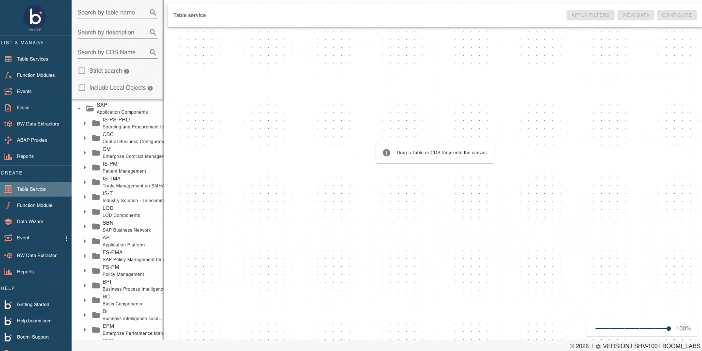
Create → Table Service — the empty canvas. Search by table name, description, or CDS view name on the left.
Build the Table Service — Join VBAK & VBAP
-
1
In Search by table name, type
vbak. The component tree narrows to SAP → SD (Sales and Distribution) → SD-SLS → VA → VBAK — Sales Document: Header Data. Drag VBAK onto the canvas.The table card shows the first few fields with their descriptions and a +219 badge for the rest — VBAK has 224 columns. Everything here is header-level: order number, dates, who created it, customer, totals. There's no line-item detail. That's the gap the join will fill.
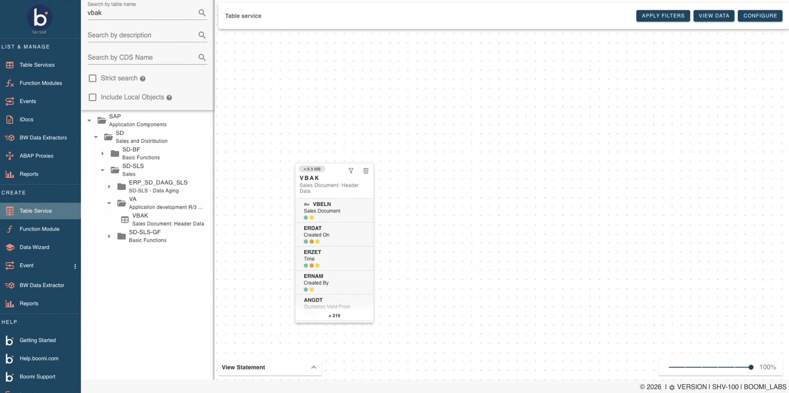
VBAK on the canvas — header fields, with +219 more behind the filter icon -
2
Click the filter (funnel) icon on the VBAK card to open its field list. Scroll through it before changing anything.
This is the part of Boomi for SAP that saves you a trip to the data dictionary. Every field comes with its SAP description — you'd never guess that
ERZETis "Time" orERNAMis "Created By" from the names alone — plus its type and min/max length (VBELNis a 10-character string;ERDATexactly 8). Those lengths are the same fixed-length constraints you dealt with in Exercise 1, surfaced up front. Key fields are marked with the key icon.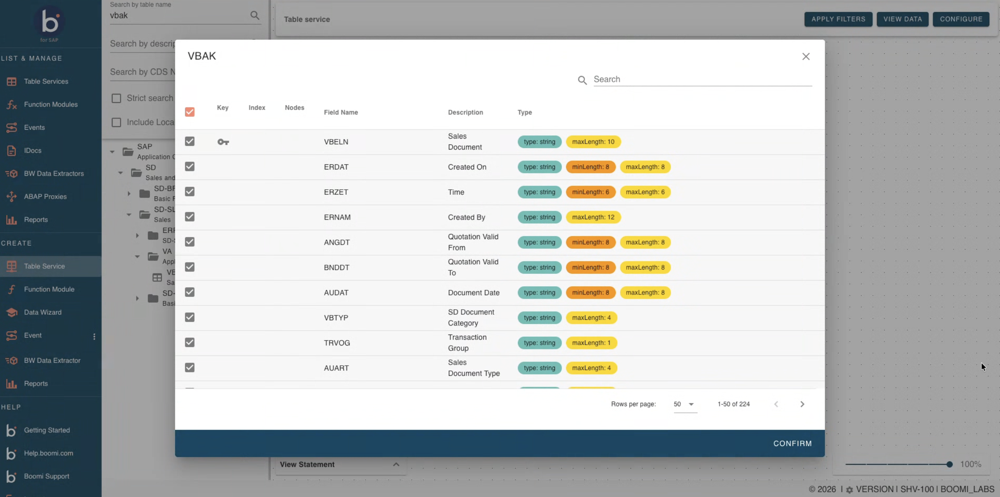
The VBAK field list — description, type, and length for all 224 fields; ERZET turns out to be "Time" Close the dialog for now — you'll come back to trim the fields in instruction 5.
-
3
Clear the search box, type
vbap, and drag VBAP — Sales Document: Item Data onto the canvas to the right of VBAK.VBAP carries the line items — material, quantity, description — and its own key is
VBELN+POSNR(item number). Both cards now sit on the canvas, unconnected.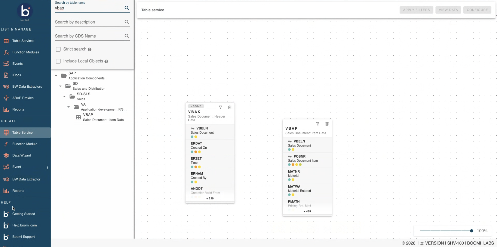
VBAK (header) and VBAP (items) side by side, not yet joined -
4
Create the join: click and drag from VBELN on VBAK across to VBELN on VBAP. As you drag, the VBAP fields light up with colored bars showing how well each one would match. Release on VBELN.
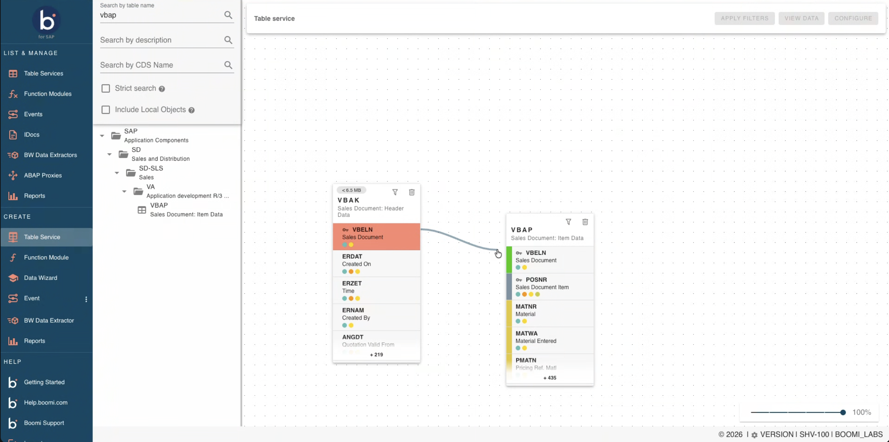
Mid-drag — the source field highlights and every VBAP field shows a compatibility color Reading the match colors — hover a target field while dragging to see why it's colored the way it is. Green is Very good match — same data element: both fields are defined from the same SAP data element, so the join is exactly what SAP intends. Other colors mean Technically possible — the types are compatible, so SAP will let you join on it, but it isn't the same data element and is rarely the join you want. For header-to-item,VBELN→VBELNis the green one.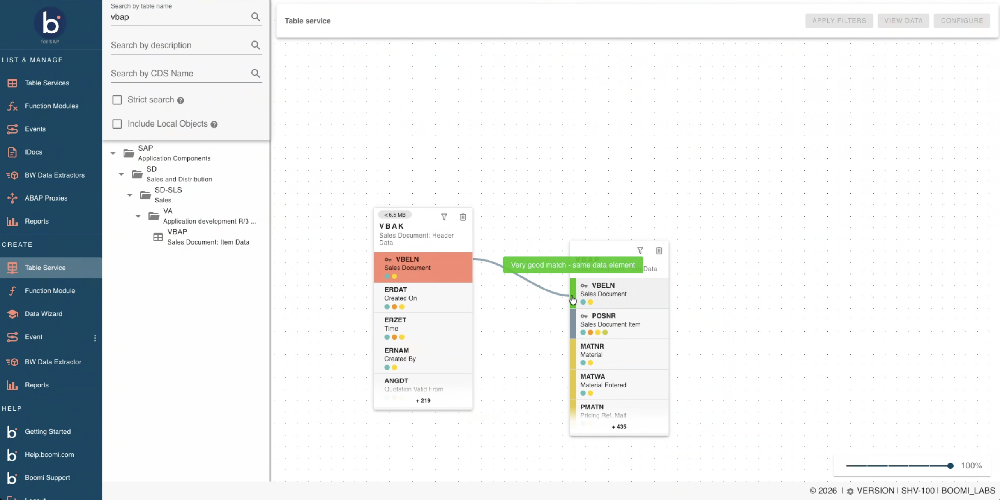
VBELN → VBELN: "Very good match — same data element" 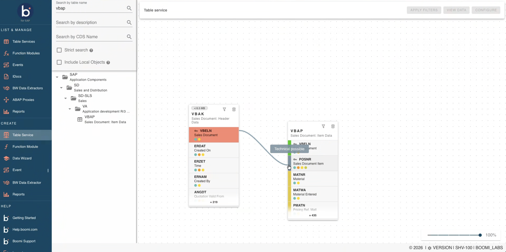
Hovering POSNR instead: "Technically possible" — compatible type, wrong join The result is an inner join on the document number — one header row joined to its many item rows. Join rule worth remembering: the fields you join on must stay selected in the field list, just like a SQL join key.
-
5
Click the filter fields icon on each table and deselect all fields by clicking the top checkbox.
Why trim the fields?VBAK and VBAP have hundreds of columns each. Selecting only what downstream consumers need keeps the payload small, the query fast, and the database schema clean — the same discipline you'd apply to any production extract.

Open the field filter 
Deselect all fields -
6
Re-select only the following fields:
VBAK (Sales Document Header):
VBELN, ERDAT, AUDAT, VBTYP, NETWR, WAERK, VKORG, VTWEG, SPART, VKGRP, VKBUR, GSBER, KUNNRVBAP (Sales Document Item Data):
VBELN, POSNR, MATNR, CHARG, MATKL, ARKTX, PSTYV, KWMENG, KMEINNote
VBELNstays selected on both tables — it's the join key, so it has to remain in focus.
Selected fields from both tables
Save & Explore the Table Service
-
1
Click Configure Service. In the configuration dialog, enter a service name using the pattern SALES_ORDERS_XX (replacing XX with your initials). Click Save.
The initials matter: this Core already holds dozens of table services from other users. A unique name is how you'll find yours when you import it into the integration in Section 2.

Configure and save the Table Service Record your Table Service name — you'll need the exact name (SALES_ORDERS_XX) when importing the profile in Section 2, and again in Exercise 3 when this same service enriches your event payloads. -
2
Open your saved service from the Table Services list and look around: you can see the joined tables and selected fields in one place, view sample data to confirm the join returns what you expect, and even see the API path the service is exposed on.
About filters — the service definition can carry refinement parameters (e.g., only orders in a date range), but the usual pattern is to leave the service broad and pass filters at query time from the integration — you'll see where those go in Step 5. One service, many differently-filtered consumers.
Log In to the Boomi Platform & Copy the Sample Process
You copied a process in Exercise 1 — but that was the Create Sales Order process. This is a different integration (SAP to DB: query out, load down), so it gets its own skeleton from the Trainer folder.
-
1
Log in to the Boomi platform using the link below (same account as Exercise 1).
Credentials
UserProvided by your lab facilitatorPasswordProvided by your lab facilitator
Boomi platform login -
2
In the Trainer folder, find the process SAP to DB Sample. Copy it to your USERXX folder.

Copy the SAP to DB Sample process -
3
Open the SAP to DB USERXX process on the canvas by double-clicking. You'll see three shapes: a Boomi for SAP start shape (the query), a Map, and a Database destination — the exact flow from the strip above.
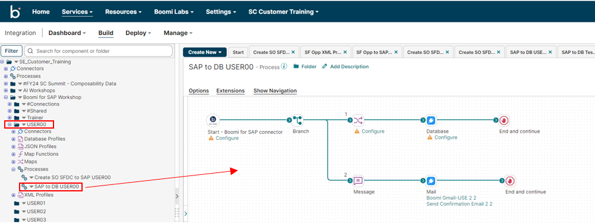
The SAP to DB process canvas
Configure the Start Shape — Query Your Table Service
Same branded connector as Exercise 1, different action: FUNCTION invoked a BAPI; QUERY reads from a Table Service. When you import, the wizard lists every table service published on this Core — which is why your unique SALES_ORDERS_XX name matters. The import generates a JSON response profile matching your service's exact field selection.
-
1
Click Configure on the Start shape. In the connector configuration, select SAP S4 Connection from the drop-down.

Configure the Start shape -
2
Click + to create a new operation. Ensure the Action is set to
QUERY.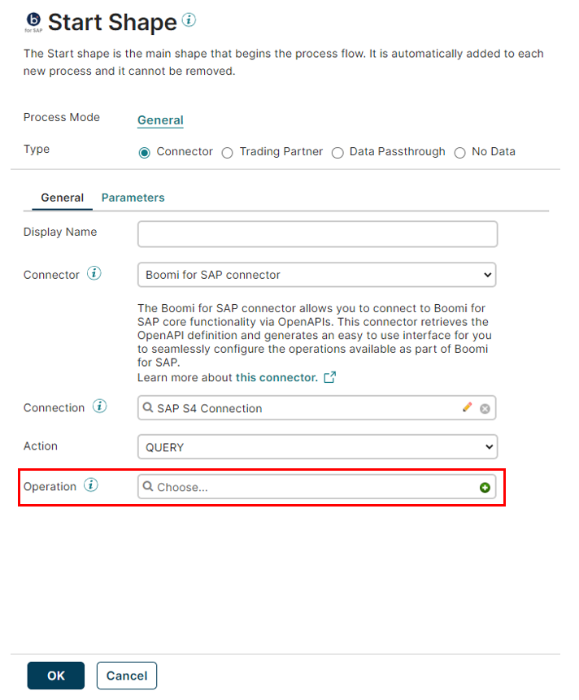
Set the Action to QUERY -
3
On the Connector Operation screen, enter an operation name (e.g., Query Sales Orders USERXX) and click Import.
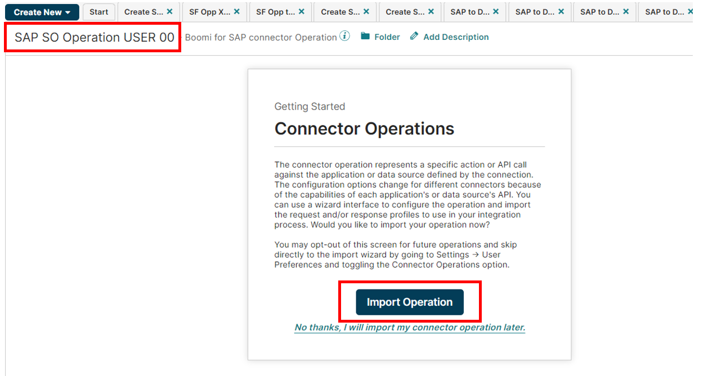
Name the operation and click Import -
4
In the Import Wizard, select your Atom connection and filter by your Table Service name (SALES_ORDERS_XX). Click Next twice, then Finish.

Import Wizard — select your Table Service -
5
The profile is now imported. Change Max Returned Rows to
100and click Save and Close, then OK to return to the canvas.Reading the response — and where filters go- Max Returned Rows = 100 caps the pull for testing — the demo system has years of orders and you don't need them all.
- The response profile mirrors your service: header fields once, and the joined item data as an array — one header, many lines, exactly how SAP stores it.
- This operation screen is also where query filters live: you can add static filters or dynamic ones driven by process properties (e.g., "orders created in the last 30 days"). They're appended to the query at run time — the better home for filtering than baking it into the service definition.
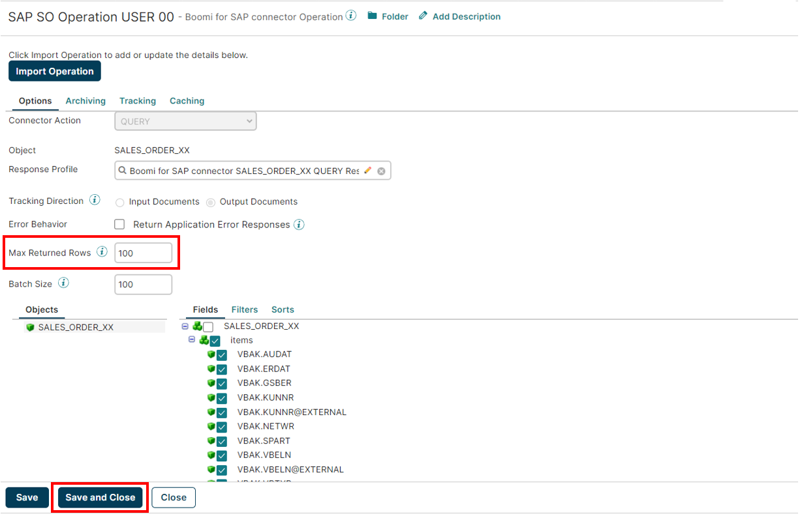
Set Max Returned Rows to 100 
Return to the canvas
Configure the Database Destination
The target is a shared training database (an Amazon Aurora instance in the workshop's AWS account) with a Sales Orders SAP table waiting for everyone's rows. The connection component is pre-built: you can select it and see where it points, but the credentials are encrypted — you can't view or change them. That's deliberate, and it's the same pattern your own organization would use to share connections safely across a team.
-
1
Click Configure on the Database shape and select the existing database connection.
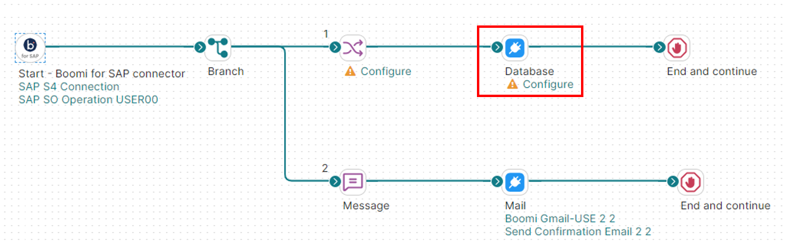
Database shape on canvas 
Select the pre-built database connection -
2
Set Action to
Sendand click + to create a new operation. Click OK.
Set the action to Send -
3
In the Database Operation screen, enter an operation name and click + to create a new Database Profile.
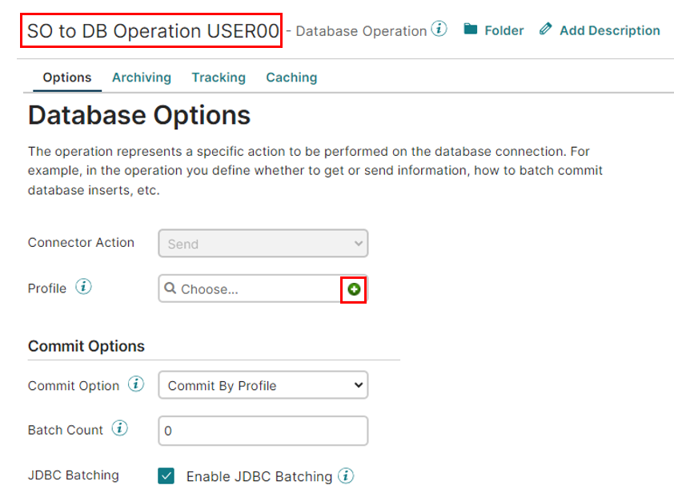
Create a Database Profile -
4
Give the profile a name. Click Statement, choose type Dynamic Insert, then click Import.
Dynamic Insert means Boomi writes theINSERTstatement for you from the profile's fields — no hand-written SQL, and the statement adapts if the mapped fields change.
Choose Dynamic Insert -
5
In the Database Import Wizard, select the appropriate options and click Next. Select the Sales Orders SAP table and click Next.

Database Import Wizard 
Select the Sales Orders SAP table -
6
Select all fields, click Next, then Finish.

Select all fields -
7
Name the Database Profile SO DB Profile USERXX. Click Save and Close on the profile, Save and Close again on the operation, and OK to return to the canvas.

Save the Database Profile 
Save the Database Operation
Configure the Map & Test the Process
The query returns SAP-named JSON (VBAK.NETWR); the database wants column names (NETVALUE). The map translates one to the other, flattening each item in the array into its own database row along the way.
-
1
Click Configure on the Map shape, then + to create a new map. Name it (e.g., SAP to DB Map USERXX). Assign your Table Service JSON profile (SALES_ORDERS_XX) to the Source panel and the DB Profile to the Destination panel — Choose is more reliable than drag-and-drop.
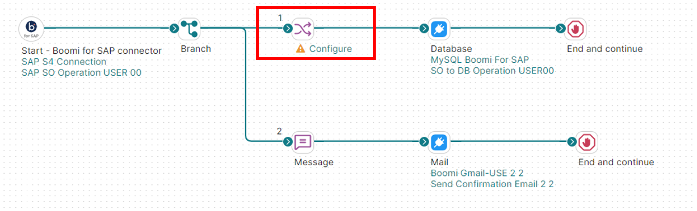
Configure the Map shape 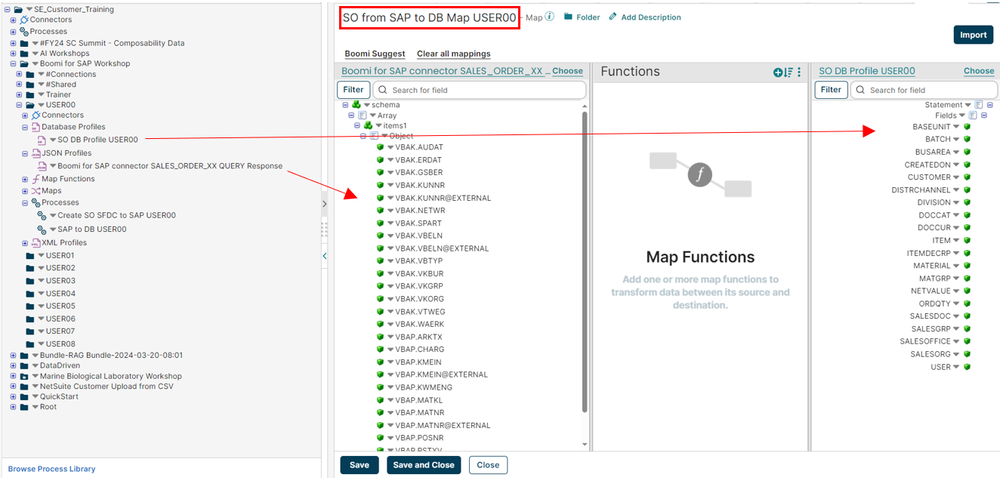
Assign source and destination profiles -
2
Map the following fields (drag a line from source to destination):
Shortcut: hit Suggest first and let Boomi propose the lines — then verify every suggestion against the table below before accepting. Trust, but check.Source Element Destination Element schema/Array/items1/Object/VBAP.CHARG Statement/Fields/BATCH schema/Array/items1/Object/VBAK.GSBER Statement/Fields/BUSAREA schema/Array/items1/Object/VBAK.KUNNR@EXTERNAL Statement/Fields/CUSTOMER schema/Array/items1/Object/VBAK.VTWEG Statement/Fields/DISTRCHANNEL schema/Array/items1/Object/VBAK.SPART Statement/Fields/DIVISION schema/Array/items1/Object/VBAK.WAERK Statement/Fields/DOCCUR schema/Array/items1/Object/VBAP.POSNR Statement/Fields/ITEM schema/Array/items1/Object/VBAP.ARKTX Statement/Fields/ITEMDECRP schema/Array/items1/Object/VBAP.MATNR@EXTERNAL Statement/Fields/MATERIAL schema/Array/items1/Object/VBAP.MATKL Statement/Fields/MATGRP schema/Array/items1/Object/VBAK.NETWR Statement/Fields/NETVALUE schema/Array/items1/Object/VBAP.KWMENG Statement/Fields/ORDQTY schema/Array/items1/Object/VBAK.VBELN@EXTERNAL Statement/Fields/SALESDOC schema/Array/items1/Object/VBAK.VKGRP Statement/Fields/SALESGRP schema/Array/items1/Object/VBAK.VKBUR Statement/Fields/SALESOFFICE schema/Array/items1/Object/VBAK.VKORG Statement/Fields/SALESORG Spot the details — the@EXTERNALvariants (KUNNR, MATNR, VBELN) are the human-readable formats without SAP's internal leading zeros — the mirror image of the padding you built in Exercise 1. And every source path starts withArray/items1: each joined item row becomes one database row.
Field mapping overview -
3
Set a default value for the
USERfield in the destination profile: click the field, choose Set Default Value, and enter your initials.Why tag your rows?Everyone's data lands in the same shared table. Stamping your initials into the
USERcolumn is how your rows stay identifiable — and how the trainer can prove your integration worked when they open the database at the end.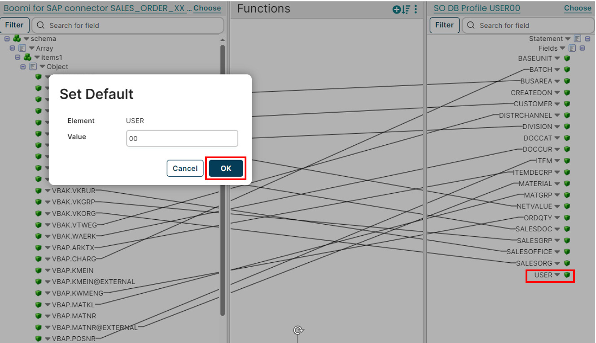
Set Default Value on the USER field -
4
Click Save and Close to return to the canvas.
Optional: the sample process includes a Mail branch that emails you the loaded orders. Feel free to configure it with your address (screenshots below) or simply disconnect the branch — it's not needed for the exercise.
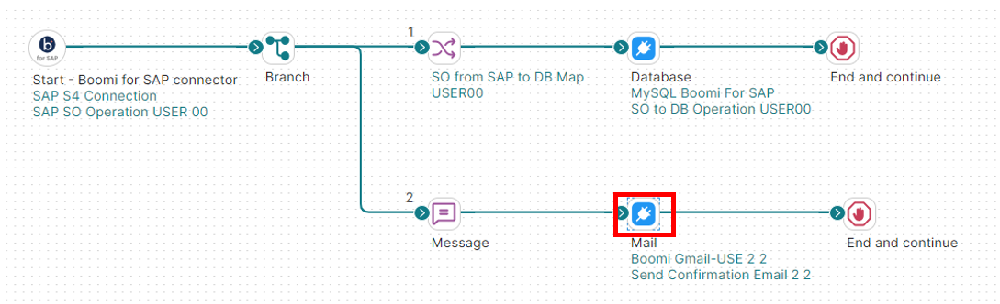
Optional Mail shape configuration 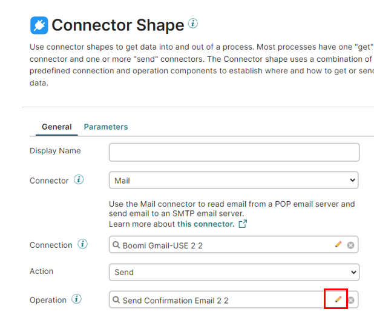
Enter your email address (optional) -
5
Save and Test the process, choosing the correct Atom for the test run.
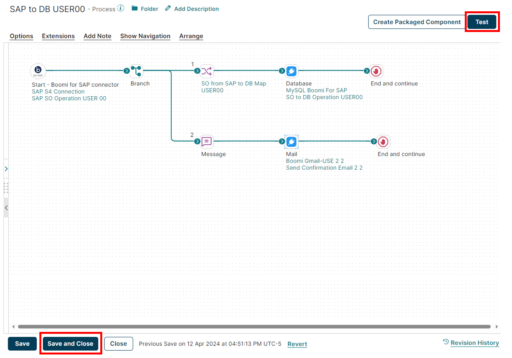
Save and Test the process 
Choose the Atom for the test -
6
In the monitor screen you should see all green lights. Review the logs to verify SAP sales order records were written to the database — the query pulled your joined header+item rows, the map renamed them, and the Dynamic Insert loaded them.

Monitor screen — all green Success! All connector shapes green. If you see errors, verify Max Returned Rows (Step 5) and that your field mapping matches the database schema.Trainer moment — proof in the databaseOnce everyone has run their test, your trainer will connect to the Aurora database on the projector and query the Sales Orders SAP table. Watch for the
USERcolumn — every set of initials on screen is one participant's integration, live in the same table. That's your join, your query, your mapping, landed.